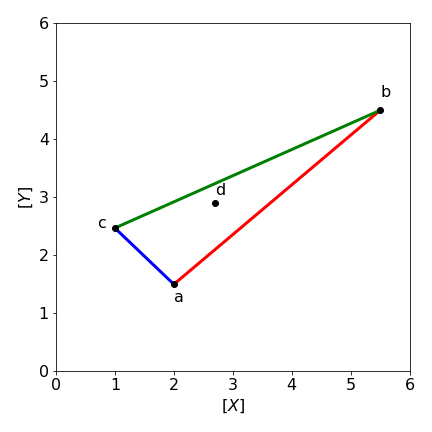

12 Solving equations using matrices. Eigenvectors and Eigenvalues.
Contents
12 Solving equations using matrices. Eigenvectors and Eigenvalues.#
# import all python add-ons etc that will be needed later on
%matplotlib inline
import numpy as np
from numpy import linalg as LA
import matplotlib.pyplot as plt
from sympy import *
init_printing() # allows printing of SymPy results in typeset maths format
plt.rcParams.update({'font.size': 14}) # set font size for plots
12.1 Simultaneous equations#
A matrix can be of great use in solving simultaneous equations provided that its inverse exists. We consider two types of equations. First is the general case
where \(\pmb M\) is a matrix and \(\vec x\) and \(\vec C\) are column vectors (one-dimensional matrices). Later on, we consider eigenvalue - eigenvector equations, which are more important and useful to us. In this section matrices are given bold letters, a vector is indicated by an arrow.
A set of simultaneous equations can conventionally be written as shown below, but the matrix equation is equivalent and clearer.
and the column vector of numbers is \(\vec C\) and \(\vec x\) the other column vector. To solve equation \(29\), multiply the first equation by \(2\), the second by \(6\), and the third by \(3\), then subtract to eliminate the \(x\) and so on, until y and z are found. Clearly, this is a somewhat complicated business especially if there are, for example, ten equations and ten unknowns to solve for. At school, you may have used this method or Cramer’s Rule, which is really a matrix method. This method has the following algorithm:
(a)\(\quad\) Calculate the determinant of the matrix.
(b)\(\quad\) Replace one column of the matrix by the column vector \(\vec C\) to form a new matrix.
(c)\(\quad\) Divide the determinant of this by the determinant of the original matrix.
(d)\(\quad\) Repeat (b, c) choosing different columns.
It is easier to see as an equation, and the result for component \(i\) of the vector \(x\) is
The value \(|M_{C\to i}|\) is the determinant formed with column \(C\) replacing column \(i\). The first component \(i = 1\) gives the unknown \(x\), the second \(y\) the third \(z\). The value of \(x\) is
12.2 A matrix method for solving simultaneous equations#
The formal matrix method to solve equation (28) is to invert the equation by multiplying both sides by \(\pmb{M}^{-1}\) to form \(\pmb{M}^{-1}\pmb{M} = \pmb{1}\) and therefore \(\pmb{M}^{-1}\pmb{M}\vec x = \pmb{M}^{-1}\vec C\). The next step is to replace the \(\pmb{M}^{-1}\pmb{M}\) by the unit matrix \(\pmb{1}\), but this has no further effect because \(\pmb{1}\vec x = \pmb{M}^{-1}\vec C\) is the same as
The matrix method of solving simultaneous equations has therefore become that of finding the inverse of a matrix \(\pmb{M}\), and performing a matrix multiplication with \(\vec C\).
(i) Solving simultaneous equations with the computer#
In practice, you will generally want to use the computer to solve simultaneous equations and this is illustrated in two ways below using Python. In the matrix method, \(\vec C\) is a column matrix and \(\pmb{M}\) has rows of the equation coefficients. Some methods are shown below. The first two using numpy, which gives a numerical answer, the second using Sympy which gives the result algebraically but can be converted to real numbers by multiplying by \(1.0\). When using numpy the \(\mathtt{linalg.inv(..)}\) produces the inverse of the matrix, the dot product \(\mathtt{np.dot(..,..)}\) performs the matrix multiplication.
The equation to be solved is eqn. 29 above.
M = np.array([ [3,4,1],[1,-3,6],[2,-1,4] ] )
C = np.array( [6,-3,0] )
answer = np.dot( np.linalg.inv( M), C )
answer
array([ 0.78947368, 0.94736842, -0.15789474])
An alternative is to use the numpy linear algebra package \(\mathtt{linalg}\), see the top of this section for how to include it, i.e \(\mathtt{from\; numpy\; import\; linalg\; as\; LA}\). The solve routine may be more numerically robust than matrix inversion.
M = np.array([ [3,4,1],[1,-3,6],[2,-1,4] ] )
C = np.array([6,-3,0])
LA.solve(M,C)
array([ 0.78947368, 0.94736842, -0.15789474])
This example uses Sympy which gives an exact answer as a fraction.
M, C = symbols('M, C')
M = Matrix([ [3,4,1],[1,-3,6],[2,-1,4] ])
C = Matrix([6,-3,0])
M**(-1)*C
Care has to be taken to note the order of the results which may not be the same as that of used to form the matrix \(\pmb M\) defining \(x, y\) and \(z\), and therefore we cannot necessarily tell which answer is which. An alternative method, uses the Sympy solve routine, which does tells us which is which. Notice that the constant must be moved to the left hand side so that all the equations equal zero.
x, y, z = symbols('x, y, z')
eq1 = 3*x +4*y +z -6
eq2 = x -3*y +6*z +3
eq3 = 2*x -y +4*z
ans = solve((eq1,eq2,eq3))
ans
(ii) Mixing solutions#
It is quite easy to work out how to make a mixture of two components from standard solutions but what if three standards are needed ? The calculation becomes one of solving three simultaneous equations for which a matrix method is suitable.
Consider mixing Martini which consists of various amounts of Gin and Vermouth. Different brands of Gin differ in their strength but typically it is about 40% alcohol by volume (abv) although Navy strength is \(57\)% abv! Vermouth is added (\(19\)% abv) in various proportions. For the purposes of calculation we will assume that the Gin is \(40\)% V/V (volume/total aqueous volume) and Vermouth \(19\)% V/V. To make a classic Martini with a 3:1 ratio we look at the volume fraction \(0\le v \le 1\) of the Gin and therefore for the Vermouth is \(1-v\). The 3:1 Martini has the fraction of Gin as \(f=3/(3+1)\) and so for Vermouth \(1/4\). In this mixture the alcohol is present at \(0.4f+0.19(1-f)= 0.4\cdot 0.75+ 0.25\cdot 0.19= 0.347\) or \(34.7\)%. In this example the only percentages available are clearly only in the range \(19 \to 40\)%. In general if \(v\) is the volume fraction (\(0\le f \le 1\)) and \(\vec a,\;\vec b\) vectors describing concentration of stock solutions then the combination is \(f\vec a+(1-f)\bar b\), for example \(\vec b =\begin{bmatrix} 0&19 \end{bmatrix}\) for the Vermouth.
If we wish in general to make solutions of species \(X\) and \(Y\) in various different proportions then three stock solutions are needed. These are shown in figure 52a in a plot of concentration of \(Y\) vs that of \(X\). We wish to make a solution with \(X,Y\) with composition \(d\). This can be done for any composition on or inside the shaded triangle, i.e. along any of the vectors \(\vec a=\overline{AB},\;\vec b=\overline{BC},\;\vec c=\overline{CA}\). If a composition outside this area is needed then a fourth standard/stock solution is needed, fig 53b. Any point on a vector in the triangle can be made up of contributions to the three vectors, thus if these vectors are \(\vec a, \vec b,\vec c\) and the vector to point \(d\) is \(\bar d\) the equation is
where the \(c\)’s are the coefficients of each vector and these sum to unity, \(\sum c_i=1\) and as each is a fraction which cannot be negative, \(0\le c_i\le 1\). Writing the equation is matrix form gives
and the solution obtained by left multiplying both sides by the inverse of the \(3\times 3\) matrix as in eqn. 30.
We wish to make up a solution (\(d\)) in \(X\) and \(Y\) with \(X=2.7,\; Y=2.9\) using three stock solutions, \(a, b, c\) made up of solutions whose vectors are \(\vec a=\begin{bmatrix}2.0 & 1.5\end{bmatrix},\; \vec b=\begin{bmatrix}5.5 & 4.5\end{bmatrix},\;\vec c=\begin{bmatrix}1.0 & 2.47\end{bmatrix}\). Plotting a graph shows that the mixture \(d\) is inside the triangle of the other three solutions, if it were not then we would obtain a negative contribution in the calculation which is of course not possible experimentally. The calculation is
M = np.array( [[2.0, 5.5, 1], [1.5, 4.5, 2.47], [1, 1, 1]] )
C = np.array( [2.7, 2.9, 1] )
ans = LA.solve(M,C)
print('{:6.3f} {:6.3f} {:6.3f}'.format(ans[0],ans[1],ans[2] ) )
0.237 0.325 0.438
These values are the proportions of stock solutions \(a,b,c\) needed to make solution \(d\).

Figure 52a. Mixing stock solutions \(a, b, c\) in different amounts of \([X],\;[Y]\) to make solution \(d\).
If there are four stock solutions then any new mixture must be within the shape of these four. However, any point will always be within a triangle formed by three of the four stock solutions so the method above can be used.
In the situation that the mixture needs three different species then the method can be extended, by having four or more columns and rows in the matrix but the new solution must lie within the volume contained by species \([X],[Y],[Z]\) rather than an area.
(iii) Rotational Spectroscopy#
Raman spectroscopy has been used to measure the rotational energy levels of benzene vapour, which are then used to obtain accurate CH bond lengths. The rotational constants obtained from C\(_6\)H\(_6\) and C\(_6\)D\(_6\), are \(B = 0.18960 \pm 0.00005\) and \(B = 0.15681 \pm 0.00008 \;\mathrm{cm^{-1}}\), which describe the motion perpendicular to benzene’s sixfold axis. The bond lengths will be calculated assuming that the molecule has \(D_{6h}\) symmetry, i.e. is a regular hexagon and behaves as a rigid rotor. This calculation shows how isotopic substitution makes it possible to calculate very accurate bond lengths even in large molecules; in fact, far more accurately than by X-ray crystallography.
There does not initially appear to be enough information to do the calculation. However, the rotational constants are related to the moment of inertia of the molecule by \(\displaystyle B=\frac{\hbar}{4\pi I}\;\mathrm{s^{-1}}\) where \(I\) is the moment of inertia (kg m\(^2\)). The moment of inertia is related to bond lengths as \(I =\Sigma_i m_i r_i^2\) where the sum is taken over all the distances \(r\) the \(i\) atoms have from the rotation axis. The mass of atom \(i\) in kg is \(m_i\). The rotational motion measured is perpendicular to the sixfold axis, which means that the rotation axis must pass through opposite carbon atoms, for instance, 1 and 4, Fig. 53. It is necessary to form two equations for the moments of inertia of the two molecules, and then to solve them simultaneously. Notice that the \(B\) values are in wavenumbers, so it is necessary also to change \(B\) to s\(^{-1}\) by multiplying by the speed of light in cm s\(^{-1}\). Moment of inertia calculations are described more fully in Section 15.6.
Figure 53. The Raman spectrum has lines measuring the rotational motion in benzene about the twofold (C\(_2\)) axis shown.
To calculate the moments of inertia, the distances of the atoms from the rotation axis are needed and can be calculated using Fig. 53. The CC bond length is labelled \(r\) the CH is \(s\). The distance of each C atom from the axis, is either zero, which will not change the moment of inertia, or \(h = r \sin(60\pi/180)\). Similarly, each H atom contributes either zero or \((r + s)\sin(60\pi/180)\). The moment of inertia is therefore due to four C and four H atoms,
Because two rotational constants are measured and these give moments of inertia \(\displaystyle I=\frac{\hbar}{4\pi B}\), two simultaneous equations are produced for the H and D derivatives. These are
Solving for \(r\) and \(s\) using Sympy can give an algebraic answer, which is not of much interest, but a numerical one is also possible as shown below:
r, s, c, hbar, B_H, B_D, m_H, m_D, m_C = symbols('r, s, c, hbar, B_H, B_D, m_H, m_D, m_C')
m_C = 1.992648e-26 # mass C
m_H = 1.673534e-27
m_D = 3.344497e-27
hbar= 1.054572e-34
c = 2.99792458e10 # in cm/sec
B_D = 0.15681*c # rotational const D
B_H = 0.18960*c
eq1 = (m_C + m_H)*r**2 + m_H*s**2 + 2*m_H*r*s - hbar/(12*pi*B_H)
eq2 = (m_C + m_D)*r**2 + m_D*s**2 + 2*m_D*r*s - hbar/(12*pi*B_D)
ans = solve((eq1,eq2),(r,s) ) # order returned r , s
for i in range(len(ans)): # do this only to print clearly
print('{:4d} {:8.4e} {:8.4e}'.format(i, ans[i][0],ans[i][1]) )
0 -1.3973e-10 -1.0843e-10
1 -1.3973e-10 3.8790e-10
2 1.3973e-10 -3.8790e-10
3 1.3973e-10 1.0843e-10
The only physically meaningful roots of these equations are when both are positive, i.e. \(r = 0.13973 \) nm for the CC bond length and \(s = 0.10843\) nm for the CH bond length. The results are quoted to 5 figures, as this is the precision of the initial data.
(iv) Balancing complex chemical equations#
(a) Balancing an equation such as
can be very difficult by hand there are five species Fe, S, H, N, O and six types of molecule so six as yet unknown coefficients. If we assign the coefficients for each molecule in the equation going from left to right as \(x_0,x_1, x_2\cdots x_5\) the the equations for the different elements are,
which is going to be very tricky to unravel by hand. Using Sympy is one option as in example 1, however, there are more equations that species so that the solution is only found in terms of other \(x\)’s.
Placing the coefficients of \(x\) in each equation into matrix form with column’s in order \(x_0,x_1\) etc. and rows as \(\text{Fe,S}\cdots\) as above, gives
and the matrix has size \(6\times 5\) and so we cannot use equation 30 because a non-square matrix cannot be inverted. The way around this problem is to convert the matrix into the row echelon form. This means changing the matrix by adding/multiplying/swapping rows until all the (now altered) values lie above the diagonal and the rest of the matrix is zero. There is a standard way to do this called Gaussian Elimination. A built-in Sympy function (\(\mathtt{.rref()}\)) will be used to do this, and although it is not difficult to do by hand it is fiddly and errors are easily made.
In the echelon form the last column contains the coefficient or a ratio of them from which the coefficients are obtained by clearing any fractions by multiplying by the same constant. This constant produces the missing coefficient. Although it is not necessary the results are clearer if reactant values are negative integers and products positive, this ensures that all proper values are either all positive or all negative and in the latter case the sign is ignored. Finally, zero value in any of the the calculated coefficients indicate an error.
# matrix of x_0, x_1 values with reactants negative and products positive
mFeS2 = Matrix([ [-1,0,2,0,0,0],[-2,0,3,1,0,0],[0,-1,0,2,2,0],[0,-1,0,0,0,1],[0,-3,12,4,1,1] ] )
mFeS2
# echelon form. (We can ignore detals of calaution in temp)
ans,temp = mFeS2.rref() # reduced echelon form of matrix . Ignore temp as it is unimportant here.
ans
Clearing the fraction and ignoring the signs in the last column (as they are all the same) and adding the multiplier ( \(10\) ) as the last value gives \(\begin{bmatrix} 2 & 10 & 1 & 1 & 4 &10\end{bmatrix}\) as the coefficients balancing the equation producing
(b) \(\displaystyle \mathrm{CO + CO_2 + H_2 \to CH_4 + H_2O}\)
The equation
presents a different problem. There are three (C,H,O) species and five molecules (and equations) meaning that there is an unlimited number of solutions. The resulting echelon form will have two columns and to find solutions a linear combination of these has to be made (by trial and error) with results accepted provided no fractions or zero values result. The matrix is in row order C, O, H. If there are sign changes in the result this this should be rejected, otherwise the values are used by ignoring the sign, i.e. correct values should be all positive or all negative.
mCO = Matrix([ [-1,-1,0,1,0], [-1,-2,0,0,1], [0,0,-2,4,2] ] )
mCO
ans, temp = mCO.rref() # reduced echelon form of matrix . Ignore temp as it is unimportant here.
ans
the last two columns must be added in some proportion to give the correct results. Not all values give chemically realistic results, for example negative or zero coefficients.
col5 = ans[:,-1] # last column
col4 = ans[:,-2] # last but 1 column
test= 2*col4 + 3*col5 # just guess values 3 and 2. 5 and 3 also work
test
making the coefficients \(\begin{bmatrix} 1 & 1 & 7 & 2 & 3\end{bmatrix}\) and \(\displaystyle \mathrm{CO + CO_2 + 7H_2 \to 2CH_4 + 3H_2O}\)
an alternative is of many is \(\displaystyle \mathrm{5CO + CO_2 + 19H_2 \to 6CH_4 + 7H_2O}\).
12.3 Eigenvalue - Eigenvector equations#
A most important and interesting type of equation is the eigenvalue - eigenvector equation which has the form
provided the function is not zero. The Schroedinger equation \(H\psi = E\psi\) is of this type, and is most familiar to use when used to calculate a molecules vibrational and rotational spectrum but is used in virtually all other aspects of molecular quantum mechanics. In this equation, \( H\) is the Hamiltonian operator; \(\psi\) is the wavefunction and \(E\) the energy. In this section, we will deal with operators that are matrices and functions that are vectors.
In matrix form, an eigenvector - eigenvalue equation is the special type of matrix-vector product where,
The operator \(\pmb A\) must be a square matrix, and alters column vector, \( x\) to produce itself multiplied by a constant \(\lambda\). The constant \(\lambda\) is called either an eigenvalue, a proper value, or a characteristic value. The eigenvector is \(x\). The action of the operator is to magnify or reduce the eigenvector \( x\) by an amount \(\lambda\) but other wise leaves it unchanged, i.e it ‘points’ in the same direction. In contrast, operators, such as rotation matrices, or those used in group theory, would leave the vector \(x\) unchanged in length but pointing in another direction. The eigenvalues can be real numbers, positive, negative or zero or complex numbers or a mixture these.
Equation 31 can be written as
which is preferable, because it indicates that there is one column vector \(\vec x_i\) for each eigenvalue \(\lambda_i\). As the matrix is \(n \times n\) there are \(n\) eigenvalues and \(n\) eigenvectors each of length \(n\). The eigenvectors \(x\), are usually considered to be column vectors and can be stacked into a square matrix (the modal matrix) and the eigenvalues are usually formed into the single column vector \(\lambda\). When solving an eigenvalue - eigenvector equation, the values of all the eigenvectors and eigenvalues will be determined; for example in solving the Schroedinger equation, the Hamiltonian, the sum of kinetic and potential energy is defined by the problem at hand. Solving the equations produces not only the energy levels but also the wavefunctions. The difference in solving the eigenvalue equation is that unlike the previous examples of simultaneous equations (12.1 & 2), which have the form \(\pmb A\vec x=b\) neither any \(\vec x\) nor any \(\lambda\) is known beforehand.
12.4 Kinetics, dynamics, and quantum mechanics#
Before embarking on the details of solving eigenvalue equations, it is worth considering the difference and similarities in the types of problems that can be studied. We shall meet problems in quantum mechanics, chemical kinetics, and dynamics and although there are great differences, the language to describe various problems - that is the maths - follows the same path. In kinetics, eigenvalue equations are used when several linear reactions have to be modelled. If there are five reactions, then a \(5 \times 5\) matrix of rate constants is constructed to describe the inter-conversion of species. In quantum mechanics, the Schroedinger equation is solved by expanding the new, and so far unknown, wavefunctions in a basis set of other wavefunctions. Interactions are added between various states and these are usually called couplings; mathematically they take the place of the rate constants used in kinetics. The order of the basis set determines where the couplings between states occur in the matrix. Reordering the basis set moves these positions about in the matrix, but does not affect the outcome. In kinetics, basis sets are usually not talked about; the order of the species occurring in a reaction scheme is, in effect, the basis set. Reorder the scheme, and the rate constants appear in different places in the matrix, but the result is unchanged.
12.5 Interpreting Eigenvalues and Eigenvectors#
The eigenvalue and its associated eigenvector provide us with different kinds of information. Eigenvalues are numbers that produce energies, frequencies, and timescales; eigenvectors on the other hand give geometrical type properties, such as normal mode displacements or the composition of a wavefunction leading to the shape of a molecular orbital. Each eigenvalue is always associated with its eigenvector, which as a vector is a series of numbers.
12.6 The Secular Equation and Determinant. The evaluation of Eigenvalues and Eigenvectors#
In an eigenvalue - eigenvector equation, the operator \(\pmb{A}\) is always an \(n \times n\) square matrix and \(\vec x\) is an, as yet, unknown vector (single column matrix), and similarly for the eigenvalues \(\lambda\) which also form an unknown single column matrix. The first step in solving equation 31 is to find the eigenvalues \(\lambda\). Rearranging equation 31 by subtracting the \(\lambda\) from the diagonals only produces a singular matrix, and the essential property of a singular matrix is that its determinant is zero. Doing this produces what is called the Secular Equation,
where \(\pmb{1}\) is the unit (diagonal) matrix and \(\pmb 0\) is the null matrix. This equation is, in fact, just a set of simultaneous equations in \(n\) unknowns, because there are \(n\) rows and columns. The eigenvalues are calculated from the secular determinant by setting it to zero
and solving the resulting characteristic equation, which is a polynomial in \(\lambda\). The \(\lambda\)’s only appear on the diagonal in the matrix because the matrix \(\pmb{1}\) is a unit diagonal matrix with all non-diagonal elements equal to zero. Writing the secular determinant in full gives
The \(n\) solutions of the polynomial are the eigenvalues \(\lambda_1 \to \lambda_n\) normally formed into the vector \(\pmb{\lambda}\).
Useful facts that can help in the solution are that the trace of the matrix \(\pmb A\) is equal to the sum of the eigenvalues, the trace is the sum of the diagonal terms, therefore,
and the determinant is the product of the eigenvalues \(|\pmb A|=\prod_i \lambda_i\).
Now that the eigenvalues are known the \(n\) eigenvectors, \(x_1 \to x_n\), each of length \(n\), can be found. To each of these eigenvectors, belongs an eigenvalue, \(\lambda_i\). Each eigenvalue in turn is substituted back into the secular equation and this is then solved for each \(\vec x\). The \(j^{th}\) solution, for example, is obtained using \((\pmb{A} - \lambda_j\pmb{1})x_j = 0\), and this is the part that takes the computer (or you) most time to evaluate. This is done by computing the \(i^{th}\) component of the \(j^{th}\) eigenvector, \(x_j\), which is a multiple of
where \( (-1)^{i+k}|(\pmb{A}-\lambda_j\pmb{1})_{kj}| \) is the cofactor of the matrix of element \(ki\); note that \(j\) is the index of the eigenvalue and \(k\) the index of a column.
Collecting all the eigenvectors together, they can be placed into a matrix, each column of which is an eigenvector, the first column belonging to the first eigenvalue and so forth; this is why \(x\) in equation 34 has two subscripts; the second \(j\) identifies the eigenvalue. The matrix of eigenvectors a sometimes called the modal matrix.
We can use Python with Numpy (for fast numerical solutions) or Sympy (for algebraic solutions) to do most of the matrix diagonalization. When the matrix is formed both eigenvectors and eigenvalues can be produced together. The position of any eigenvalue - eigenvector pair that the computer produces is arbitrary, and this order does not, unless accidentally, correspond to the ordering of the basis set, but the eigenvalue and its corresponding eigenvector are always produced in the same relative positions. Note that the syntax is different for Numpy and for Sympy. It is assumed that these libraries are already loaded.
# LA.eig() is imported linear algebra library shown at top of page
M = np.array( [ [2,4], [3,1] ] ) # is a matrix in numpy
evals,evecs = LA.eig(M) # eigenvals and eigenvectors are returned
print('{:s}{:f} {:f}'.format('eigenvalues = ',evals[0],evals[1]) )
print('normalised columns of eigenvectors')
print(evecs)
eigenvalues = 5.000000 -2.000000
normalised columns of eigenvectors
[[ 0.8 -0.70710678]
[ 0.6 0.70710678]]
print(evecs.T[0],evecs.T[1]) # these are first and second eigenvectors .T is transpose just to make row
[0.8 0.6] [-0.70710678 0.70710678]
# with Sympy, algebraic solution
M = symbols('M')
M = Matrix( [ [2,4], [3,1] ] ) # note different syntax to numpy
# M.eigenvals() # use if eigenvals only are wanted
ans = M.eigenvects() # returns in order : eigenvalue, multiplicity, eigenvectors not normalised
ans
ev1 = ans[1][2][0] # get second eigenvector
ev1
Another alternative is to use the sympy function matrix \(\mathtt{.diagonalize() }\) that returns eigenvectors and eigenvalues in matrix form, i.e.
M = symbols('M')
M = Matrix( [ [2,4], [3,1] ] ) # note different syntax to numpy
evecs, evals = M.diagonalize() # note order of returned matrices
evals,evecs
but here the eigenvalues are presented differently, but can easily be normalised if required.
(i) Calculating eigenvalues and eigenvectors by hand.#
To illustrate the method, the eigenvalues \(\lambda_1\) and \(\lambda_2\) of \(\displaystyle A=\begin{bmatrix} 2 & 4\\ 3 & 1\ \end{bmatrix}\) and the corresponding eigenvectors will be found by hand.
Our strategy will be to convert the matrix to the form of equation 33, expand the secular determinant, and solve for \(\lambda\). Equation 34 will be used to calculate the eigenvectors. The calculation is relatively simple for this small matrix. The equation to solve is
or
which is the characteristic equation \(\lambda^2 - 3\lambda - 10 = 0\). Solving the quadratic, produces eigenvalues
As a check the trace of the matrix is \(3\) which is also the sum of the eigenvalues, and the determinant is \(2-12=-10\) which is the product of the eigenvalues.
The eigenvectors are evaluated following equation 34. The cofactor of the top left matrix element is \(1 - \lambda\); the cofactor of \(4\) is \(3\) and so on. We have to calculate \(x_{11}, x_{12}, x_{21}\), and \(x_{22}\) and these terms form a matrix with the eigenvectors as columns. Three subscripts are needed to use equation 34; \(i, j\), and \(k\). The eigenvalue index is \(j\) and \(k\) is any column index, which is \(1\) or \(2\) in this example. Suppose we start with \(k = 1\) and \(i = 1\) then
As the cofactor of element \((1,1)\) is \(1-\lambda\) ,using \(j=1\) then \(j=2\), for \(\lambda_1\) then \(\lambda_2\), we obtain \(x_{11} = 3\) and \(x_{12} = -4\) respectively, because \(\lambda_1 = -2\) and \(\lambda_2 = 5\).
Next, choose \(i = 2\) to obtain the second row of the same eigenvector and again chose \(k = 1\) then \(x_{2j} = (-1)^{2+k}| (\pmb A - \lambda_j\pmb 1){k_2} | = -3\) therefore, \(x_{21} = -3\) and \(x_{22} = -3\). The first eigenvector is
The eigenvectors can be normalized to give
The negative sign on \(x_2\) was ignored because both terms are negative and it does not make any difference to the result if both are negative or both positive. As a check, put these eigenvector values back into the original equation
which is \(\lambda_1 x_1\) and
which is \(\lambda_2 x_2\).
The same calculation using Python or Sympy is far easier and, in practice, you will always do the calculation in this way.
12.7 Properties of eigenvalues and eigenvectors#
Some of the more important properties of eigenvalues and eigenvectors are listed here.
(a)\(\quad\) Any scalar multiple of an eigenvector is also an eigenvector, because the operator \(\pmb A\) is linear; e.g. if an eigenvector is \(x\) then \(3x\) is also an eigenvector. If the operator \(\pmb A\) is raised to an integer power, \(p = 0, \pm 1, \pm 2, \cdots\) then the eigenvalues are \(\lambda^p\). The eigenvectors are the same as those of \(\pmb A\).
(b)\(\quad\) Eigenvectors associated with different eigenvalues are linearly independent. If more than one linearly independent eigenvector belongs to the same eigenvalue, then the eigenvalue is degenerate.
(c)\(\quad\) When the operator matrix \(\pmb A\) is Hermitian or symmetric, as in quantum mechanics problems, then the eigenvectors corresponding to different eigenvalues are more than linearly independent, they are mutually orthogonal to one another. For example, if \(x_a\) and \(x_b\) are two eigenvectors corresponding to eigenvalues \(a\) and \(b\), they are orthogonal if \(x_a·x_b = 0\). As the eigenvectors are orthogonal, the matrix \(\pmb A\) will be diagonalizable.
(d)\(\quad\) In cases where eigenvectors are not orthogonal, there are strategies that can be used to achieve this if necessary; for example, Gram-Schmidt orthogonalization (Arkfen 1970).
(e)\(\quad\) To normalize an eigenvector \(x_a\), as with any other vector, divide it by \(\sqrt{x_a·x_a}\). (Note that if the eigenvector is complex you must use \(x_a^*\cdot x_a\), where \(*\) indicates the complex conjugate).
(f)\(\quad\) Given eigenvectors \(x_a\) and \(x_b\) where \(\pmb{A}x_a = \lambda_ax_a\) and \(\pmb{A}x_b = \lambda_bx_b\), if \(\alpha\) and \(\beta\) are numbers (constants), then \(\pmb{A}(\alpha x_a + \beta x_b) = \lambda (\alpha x_a + \beta x_b)\).
(g)\(\quad\) A graph of the size of the \(\lambda\)’s vs. their index number, \(1 \to n\) for \(n\) equations, is sometimes called the eigenvalue spectrum.
In case (c), to determine whether or not the eigenvectors are orthogonal in a symmetrical matrix \(\pmb A\), compare the two equations \(\pmb{A}v = \lambda_vv\) and \(\pmb{A}^Tu = \lambda_uu\).
The eigenvalues \(\lambda_u\) and \(\lambda_v\) must be different, but because the matrix is symmetrical \(\pmb{A}^T = \pmb{A}\) and there is a lemma that proposes that the dot product \(v\cdot(\pmb{A}^Tu)\) and \(u\cdot(\pmb{A}v)\) are equal.
Substituting for \(\pmb{A}v\) and \(\pmb{A}^Tu\) gives the equations \(v\cdot(\pmb{A}^Tu)=\lambda_uv\cdot v\) and \( u\cdot (\pmb{A}v)=\lambda_v u\cdot v\) and if they are equal then it must follow that \(\lambda_uv\cdot u = \lambda_vu\cdot v\). The only way that this can be true, since \(\lambda_u \ne \lambda_v\), is if \(u\cdot v = 0\), hence the eigenvectors must be orthogonal.
12.8 Basis sets: a reminder#
To be able to solve an equation such as 31, it is essential to choose a basis set for the vectors. Normally, one would like to choose an orthonormal set, such as the standard basis, and in three dimensions we could use the set \((x, y, z)\) with the basis vectors \((i, j, k)\) (see Chapter 6) or equivalently in column matrix form
both forms of which are normalized and orthonormal. Any vector can be expanded in components of its basis set; if a vector is \(V\), and if \(b\) are the expansion coefficients, then \(V = \sum b_j x_j\).
For example, in the three-dimensional basis \((i, j, k)\) this vector could be \((2i + 3j - 4k)\) where the \(b_j\)’s are \(2, 3\), and \(-4\). The vector could also be represented as the dot product of the basis vector and individual vectors
which gives \(\begin{bmatrix} 1&0&0 \end{bmatrix}\begin{bmatrix} 2\\0\\0 \end{bmatrix}=2\) for the first term of \(V\). All three terms produce the vector \(V=\begin{bmatrix} 2\\3\\-4 \end{bmatrix}\). This calculation has used the fact that the summation of the product of pairs of terms with the same index, is the same as the dot product of two vectors;
12.9 Interpreting the Secular Determinant#
The nature of the secular determinant, and hence the matrix from which it is generated, needs explaining particularly in quantum mechanical problems. In these problems, the secular determinant is always symmetrical and contains only real numbers; it is Hermitian. The order of the element in both rows and columns is the same as the ordering of the basis set. If the secular determinant is diagonal, that is contains only the diagonal elements, and all the rest are zero, then the eigenvalues are the diagonal terms and are the solutions to the Schroedinger equation. If there are non-zero, off-diagonal terms, then these mix the basis set wavefunctions and energies together when the matrix is diagonalized. The off-diagonal terms are often referred to as coupling terms, because they ‘cause interaction’ between the energy levels in the diagonal of that row and column in which that matrix element is present. The type of interaction, Coulombic or dipole-dipole for instance, varies depending on the problem at hand. In the context of chemical kinetics the terms in the matrix are combinations of rate constants linking molecules of different types as described in by the rate equations, see section 13.
In the matrix below (left) the energies \(E_{10}, E_{20}\), and so forth are the solutions to the Schroedinger equation \(H^0\psi^0 = E^0\psi^0\) because all the off-diagonal terms are zero. Suppose now that another potential energy term V is added to represent a new interaction, an electric field is applied for instance, this changes the Schroedinger equation to a new one \((H^0 + V)\psi = E\psi\) with different energies (eigenvalues) and wavefunctions (eigenvectors), which will be linear combinations of the basis set wavefunctions \(\psi^0\).
The off-diagonal matrix element \(L\) indicates that level 1 interacts with level 3, and of course, 3 with 1, and \(K\) shows that levels 2 and 3 also interact. The effect of these interactions is to form new energies \(E_1, E_2\) and \(E_3\), which are functions of the base state energies \(E_{10}, E_{20}\), and \(E_{30}\) and the coupling energies \(L\) and \(K\). \(E_{40}\) is unchanged because it is not coupled to any other level. The total energy with these new interactions remains the same which means that some energies must rise and others fall to keep the total energy constant at \(E_{10} +E_{20} +E_{30} +E_{40}\).
Figure 54. The diagonal matrix produces energy levels (left). The interactions 1-3 and 2-3 move the energy levels about as sketched (right).
Coupling between two spins. The secular determinant and block diagonal matrices#
The coupling between two spins will be calculated. The magnetic moments of electrons and nuclei are coupled via the so-called contact interaction, introduced by Fermi to account for the hyperfine interactions in atomic spectra. The nucleus has spin angular momentum \(I\) and the electron \(S\). The interaction represents the energy of the nuclear magnetic moment in the magnetic field at the nucleus, produced by the ‘spinning’ electrons. The coupling matrix with nuclear spin \(S_n = 1/2\) and electron spin \(S_e = 1/2\) produces a \(4 \times 4\) matrix because terms arise from spin combinations \(\alpha\alpha, \alpha\beta, \beta\alpha, \beta\beta\). The first letter describes the electron spin, the second nuclear spin. The label \(\alpha\) represents either the electron or nuclear spin wavefunction with spin magnetic quantum number \(m_s = 1/2\) and \(\beta\) that with \(m_s = -1/2\) (\(m_s\) is also called the projection or azimuthal quantum number). With the basis set \((\alpha\alpha, \alpha\beta, \beta\alpha, \beta\beta)\) determining the order of terms in the rows and columns of the interaction matrix is
where \(a\) is a constant. This matrix is essentially the same as that derived in equation (8.25), which describes an NMR spectrum but here with the magnetic field \(B\) set to zero. The interaction of state \(\beta\alpha\) with \(\alpha\beta\), is matrix element \((3, 2)\) and is the same as the interaction of element \((2, 3)\) of state \(\alpha\beta\) with \(\beta\alpha\). The matrix is Hermitian real and symmetrical, meaning that the eigenvalues will be real and eigenvectors orthogonal to one another. As the matrix is block diagonal containing two \(1 \times 1\) and one \(2 \times 2\) matrix, the eigenvalues can easily be found by hand. The same solution is produced by python/sympy, which will also be used to find the eigenvectors. The wavefunctions for states where there is interaction between the basis states, is in general,
where \(c_1 \to c_4\) are the eigenvector columns corresponding to each state. The notation means \(|\alpha\alpha\rangle \equiv \psi_{\alpha\alpha}\).
The two \(1 \times 1\) blocks, which correspond to states \(\alpha\alpha\) and \(\beta\beta\), each have an eigenvalue of \(1\) in units of \(a/4\). Notice that in this instance we know which states are \(\alpha\alpha\) and \(\beta\beta\). We would not know this by diagonalizing the whole matrix because the computer reorders the eigenvalues. The other two eigenvalues are the solution of the secular determinant;
which has solutions \(E = 1\) or \(-3\). These are the new states and contain a mixture of the \(\alpha\alpha\) and \(\beta\beta\) states. The amounts of each old state in the new one are given by the eigenvectors. We know that \(\alpha\alpha\) and \(\beta\beta\) are single states because they are from \(1 \times 1\) matrix.
To find the eigenvectors we can use Python/Sympy
M = symbols('M')
M = Matrix([[1,0,0,0],[0,-1,2,0],[0,2,-1,0],[0,0,0,1]])
M.eigenvals() # second value in each pair is multiplicity
M.eigenvects() # eigenvalues and eigenvectors. second number in each (1 , 3) is multiplicity
The eigenvalues confirm the previous calculation. The eigenvalue equal to \(-3\) is singly degenerate, that of \(1\) is triply degenerate. The second eigenvector \([1,0,0,0]^T\) belongs to state \(\alpha\alpha\), and the fourth \([0,0,0,1]^T\) to state \(\beta\beta\) or vice versa; it makes no difference. The wavefunctions are \(\psi = |\alpha\alpha\rangle\) and \(\psi = | \beta\beta\rangle\), and both have energy \(E = 1\) but are accidentally degenerate. The other two wavefunctions are constructed as \(\alpha\beta+\beta\alpha\) and \(\alpha\beta-\beta\alpha\) because their eigenvectors are \([0, \pm 1, 1, 0]^T\), which is in the same order as the basis set. The normalization constant for this pair of eigenvectors is \(1\sqrt{2}\), making the normalized wavefunctions for the mixed states \(\displaystyle\psi = \frac{1}{\sqrt{2}}|\alpha\beta \rangle\pm |\beta\alpha\rangle\) with energies \(E=1\) and \(-3\).
A simpler notation can be found is using (sympy) diagonalisation where the eigenvector’s matrix is returned first.
M.diagonalize()